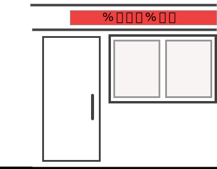

웹프여름프로젝트
가나다
영화유형 찾기
너무나 심심한 오늘 재미로
영화유형 찾아보고 친구랑 공유하기!!

START
#1. 유튜브에 들어간 당신, 어떤 영상을 선택할 건가요?
웃긴영상
화려한 액션 영상
충격적 소재의 영상
감동 일화 영상
뉴스 혹은 다큐멘터리
특별한 영상
평화로운 일상 브이로그
#2. 이벤트에 당첨되어 무료 티켓을 받은 당신, 누구에게 같이 가자고 할 건가요?
가족
친구들
연인
나 혼자
#3. 드라마를 보는 당신, 어떤 시청자인가요?
눈에 띄는 드라마만 시청
내용의 현실성을 바꾸는 사람
어려운 내용의 드라마를 좋아하는 사람
드라마는 진부하다. 보지 않는다
#4.인생에서 무엇이 가장 중요한가요?
사랑
커리어 혹은 돈
재미
평화
#5.회사를 다니고 있는 당신, 어떤 유형의 직장 동료가 가장 꺼려지나요?
지나치게 원칙대로 하는 부장님
21세기에 성차별하는 동기
농담도 안받아주는 진지한 사수
매사에 해맑은 후배
#6. 자고 일어나서도 생생하게 기억이 날 정도로 특이한 꿈을 꾸었을 때, 그에 대한 당신의 반응은?
꿈은 꿈일 뿐! 그냥 무시한다.
인터넷에 꿈 해몽을 검색해본다
친구들과 이야기하기 위해 꿈 일기를 쓴다.
#7.다음 중 가장 오글거리는 장면은?
하이틴 영화의 한 장면
주인공과 가족들이 눈물의 재회를 하는 장면
주인공이 역경을 이겨내고 뿌듯한 표정으로 화면을 응시하는 장면
#8. 여행 마지막 날 밤, 친구들과 모여앉아 무슨 이야기를 하나요?
여행 동안의 일을 되짚어보며 추억을 쌓는다.
여행 경비 혹은 내일 집에 돌아가는 일정에 대해 이야기한다.
#9. TV에서 추억의 애니메이션 특집을 할 때, 나의 반응은?
오랜만이네~ 간식을 들고 와서 본다
채널을 돌려버린다
#10. 여행지를 선택할 수 있다면 어디를 선택할 건가요?
호캉스
화려한 관광도시
나만 아는 여행지 선택
#11.당신이 싫어하는 사람이 당신의 험담을 했다는 걸 알게 되었다. 당신의 행동은?
어쩔 수 없지… 나도 그 사람 욕 하는걸? 쿨하게 넘긴다
앞에서는 쿨한 척하지만 복수를 계획한다.
당장 찾아가서 따진다
#12.놀이공원에 간 당신, 어떤 놀이기구를 가장 좋아하나요?
귀신의 집
관람차
롤러코스터
당신을 위한 추천 영화
다시하기